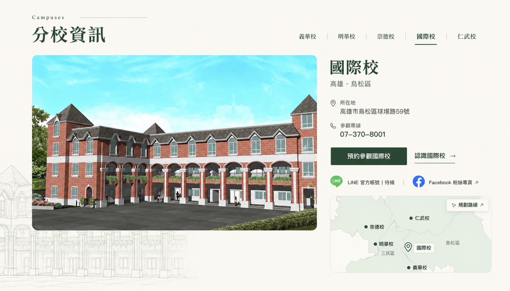
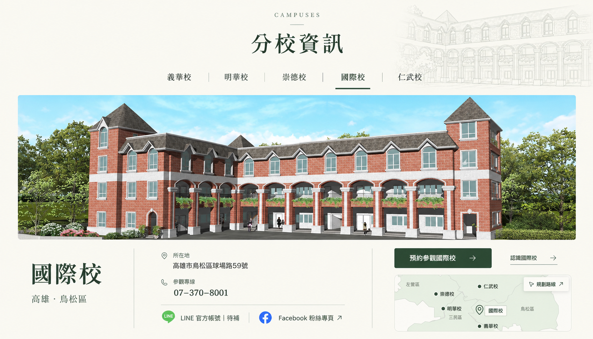
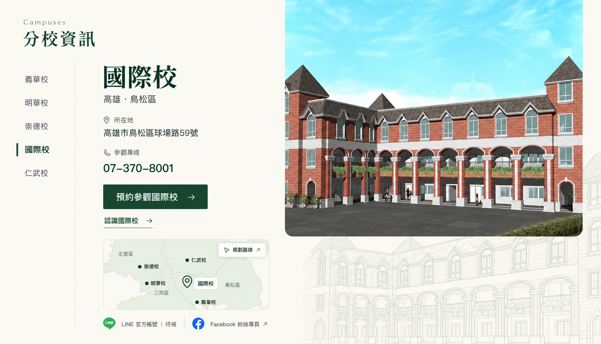
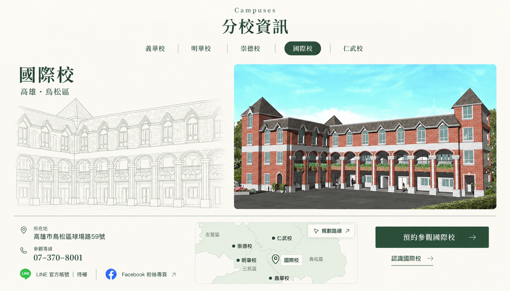
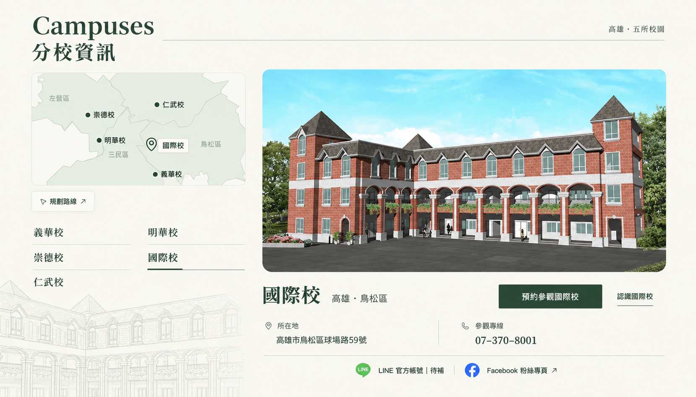
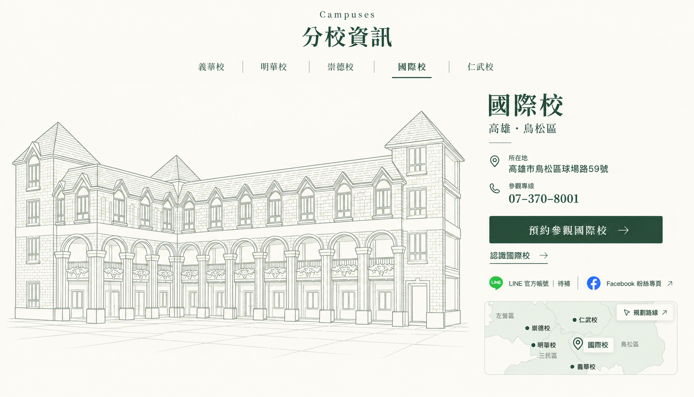
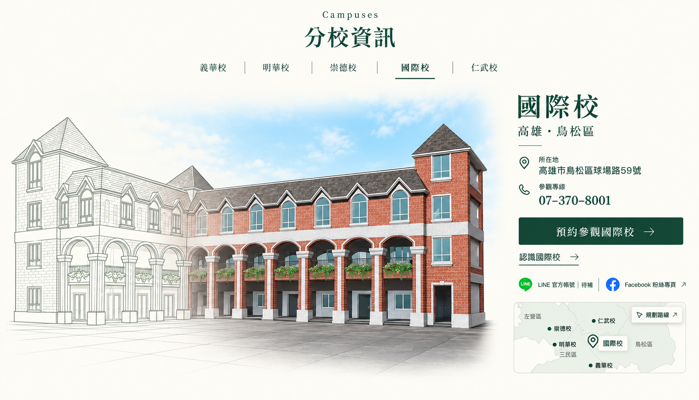

A｜雜誌雙欄
大照片搭配右側聯絡資訊，地圖移至下方。視線先看到校名與預約入口。

B｜全幅橫景
橫幅照片展現完整校舍，下方整合聯絡資訊，線稿移至標題右側。

C｜直式選校
五校選單直向排列，資訊在左、照片在右，線稿延伸於照片下方。

D｜線稿主視覺
線稿與實景照片並列，讓校舍輪廓成為版面的主要特色；聯絡資訊集中在底部。

E｜地圖導覽
從左側地圖與校名選擇分校，右側顯示照片和聯絡資訊，方便依地點比較。

F｜純線稿・校園圖鑑
移除實景照片，放大並加深校舍線稿；右側集中校名、聯絡資訊與預約入口，小地圖置於下方。

G｜照片融合線稿
同一棟校舍由左側輪廓線稿逐漸轉為實景色彩，連續呈現屋頂、窗戶與拱廊，右側保留聯絡資訊及小地圖。
